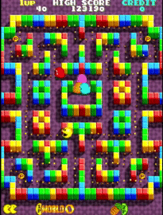
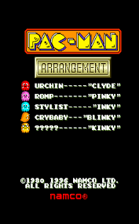

Arrangement might be pretty old, but it still has some
classic arcade difficulty and some unique systems that will keep you on your toes.
Luckily, This site provides info and tips on everything about the game.
As well as some activities for those who wish to play the game themselves.
Good Luck and have fun!